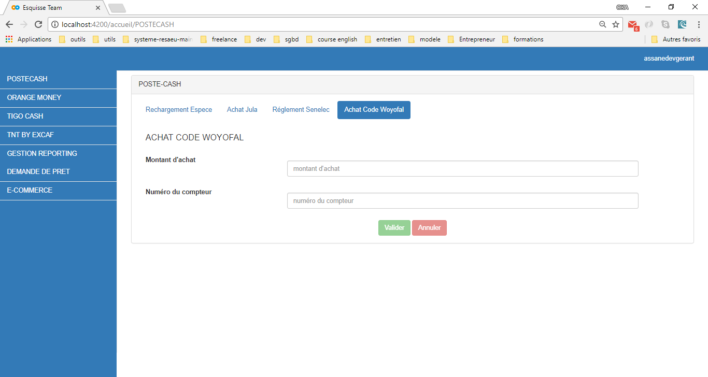
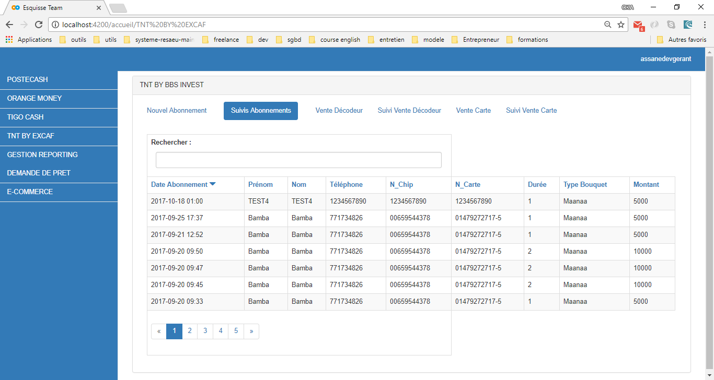

MON GUIDE D'UTILISATION
Pour toute information supplémentaire, merci de contacter le service client de Sentool au
77 226 12 27 - 77 398 18 31 - 77 398 18 58.
Bienvenue sur le guide d’utilisation de votre plateforme Sentool. Ce support vous montre en détail l’utilisation de votre outil du futur.
Vous trouverez toutes les informations nécessaires pour mieux comprendre votre outil et l’utiliser dans toutes ses potentialités.
Allez sur l’onglet PosteCash pour accéder à l’interface réservée aux services de PosteCash.
- / Achat de code woyofal
Après avoir cliqué sur « Achat de code Woyofal », il vous sera demandé de saisir les informations suivantes : le montant d’achat ainsi que le numéro du compteur woyofal à recharger et pour que la transaction soit effective vous devez appuyer sur Valider
 - / Achat de carte JULA
Sélectionner l’onglet « Achat JULA » puis entrer les informations dans les champs respectifs à savoir le nombre de cartes que le client souhaite acheter ainsi que le montant des cartes et cliquer sur Valider
- / Recharger une carte PosteCash espèces
Cliquez sur l’onglet « Rechargement Espèce » puis compléter les informations en saisissant le numéro de téléphone du client ainsi que le montant qu’il souhaite recharger et cliquer sur Valider

- / Règlement de facture Senelec en espèces
Remplir les champs vides avec les informations demandés notamment le nom de la police mentionnée sur la facture ainsi que le numéro de la facture puis cliquez sur Valider
Ce service est momentanément indisponible!
Allez sur l’onglet TNT by Excaf pour accéder à l’interface réservée aux services de TNT
- / Vente un nouvel abonnement
Sélectionner le service TNT et entrer les informations du client à savoir le numéro du décodeur ou de la carte sur la partie encerclée en orange puis cliquer sur Valider, vous serez redirigé sur une autre page où vous mettrez les informations supplémentaires pour valider la transaction.
NB : Si le client a déjà effectué un abonnement au niveau de votre point de vente, ces informations sont directement stockées au niveau de la base de donnée et vous aurez toutes ces informations une fois que vous entrez le numéro du décodeur ou de la carte sur la colonne concernée.
- / Pour vendre un abonnement à un ancien client
Allez sur l’onglet « Nouvel abonnement » et saisir le numéro de Chip ou de la carte. Le numéro de chip commence toujours par 06 mais il faut saisir les chiffres en commençant par le 6 sans le 0.
Si l’opération concerne un ancien client, vous aurez une autre page qui va s’afficher avec certaines informations du client et vous aurez à compléter que les informations concernant la transaction que vous devez effectuer (nombre de mois et type de bouquet) et cliquer sur Valider.
- / Vente de carte
La carte permet au client de pouvoir utiliser son décodeur. Pour procéder à cette opération, veuillez saisir les informations relatives au client (Nom, Prénom, Téléphone, Adresse etc.) et cliquer sur Valider pour que la transaction soit effective.
- / Vente de décodeurs
Remplir les champs requis avec les informations du client (Nom, prénom, téléphone etc.) et les numéros mentionnés au bas du décodeur (Chip ID) et le numéro de la carte et puis Valider la transaction.

- / Suivis Abonnement, décodeur et cartes
Après avoir effectué des transactions, vous pouvez effectuer un suivi concernant la vente d’un abonnement, la vente d’une carte ou d’un décodeur.


Cet onglet vous permet de faire un suivi de la situation financière de votre activité. En cliquant sur « Gestion et Reporting », vous pourrez avoir toutes les informations relatives aux opérations de votre point de vente, enregistrer toutes les dépenses relatives à l’exercice de vos activités ainsi que les recettes obtenues. Vous avez non seulement la possibilité d’enregistrer les réclamations que vous avez reçues au niveau de votre point de vente mais aussi d’être à jour sur l’état des approvisionnements de votre caisse.
- / Historique des opérations
Cette partie vous donne tous les détails par rapport aux transactions que vous avez effectuées. Vous pouvez accéder à toutes ces informations avec la barre de recherche intégrée qui vous permet d’accéder à la base d’informations relative à vos opérations selon la date, le type de service, le traitement, ou le montant et cela en quelques secondes.
- / Dépenses
Cet onglet vous permet d’enregistrer toutes les dépenses que vous avez effectuées durant une période précise et de pouvoir les utiliser ultérieurement à des fins comptables.
Vous avez quatre colonnes où il faut saisir les informations notamment le « libellé » de la dépense, le « montant de dépense », le « service concerné » (les services commercialisés au niveau de votre plateforme et cliquez sur « ajouter ». Vous répéterez le même processus à chaque fois que vous souhaitez enregistrer une nouvelle dépense.
- / Recettes
Cet onglet vous permet de lister toutes les recettes gagnées sur une période définie pour avoir toutes les données au niveau de votre serveur et être en mesure de faire un suivi comptable et analyser la performance de votre point de vente.
- / Caisse
Cette partie vous donne des informations en temps réel sur l’état de votre caisse en faisant toutes les déductions nécessaires concernant les dépenses. Elle vous informe aussi sur l’etat des approvisionnements qui seront fait par le compte superviseur dans le cas où la somme disponible dans votre caisse est insuffisante pour continuer vos opérations.
- / Réclamations
Cette onglet vous permet d’enregistrer les réclamations dans le but de les traiter le plutôt possible et spécialement être en mesure d’effectuer un suivi client effectif et très performant.
Pour mieux instaurer la proximité, un sysème de prêt a été mis en place dans le but de vous permettre de continuer vos activités si vous êtes dans l’indisponibilité d’approvisionner votre caisse en temps réel. Ces prêts sont alloués à tout point de vente qui remplit les pré-requis pour en bénéficier.